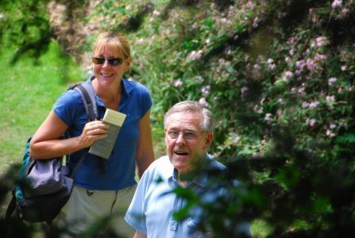

Paradox
|

|

Initial Thoughts
In the course of my life the religion that was handed down to me as a child has turned itself inside out and upside down. This is a paradoxical process. As a Roman Catholic child the nuns taught me the catechism by rote. Question 17 asked: "What is God?" Answer: "God is a supreme spirit who alone exists of himself and is infinite in all perfections" That is the remote God who created the universe all alone from the outside in the distant past. Looking back on that definition from old age I recognise it as the projection of an idealised male ego, nothing more. The God I have come to know through my life journey is my most intimate relationship, closer to me than I am to myself. This is the God who dwells in my centre, who is at home in me. The kingdom is within me. This God is not a part of God because God is indivisible. It is as if I have the whole of God to myself. But I know that the same is true for everyone. So the whole of God is in everyone and everywhere at all times. And this is the God who contains the universe. This is not logical, it is paradoxical. This God loves me as if I were his only child, although I know I am not. This God gives me his undivided attention, and does the same for everyone else. This God loves me more than I can ever love him. (Sorry about the gender language, it is easier to write). God's love for me is like sunlight, my love for God is like moonlight. So human love is a reflection of divine love. So the kingdom is both within and without as God's love flows endlessly out from the centre and is reflected all around. Some BooksLiving with Contradiction – Benedictine Wisdom for Everyday Living, by Esther de Wall deals with the dynamics of paradox in everyday living. Esther says: “This polarity, this holding together of opposites, this living with contradictions, presents us not with a closed system but with a series of open doors. This is, I suspect, the way most of us actually experience our lives. We find that we have to make room for divergent forces within us, and that there is not necessarily any resolution of the tension between them. I find it immensely liberating and encouraging to be told that this is the way things are, and that the way things are is good. St Benedict here is at his most creative and his most realistic. He describes a way of life which is immediately familiar, because it is precisely the way in which I myself live. In holding on to this polarity must not deny the truth of either, for the two poles are not mutually antagonistic. On the contrary, each makes the other possible. St Benedict is a master of paradox.” The Way of Paradox – Spiritual Life as taught by Meister Eckhart, by Cyprian Smith OSB deals with the dynamics of paradox in the divine/human relationship. Cyprian says: “It is in this field that Eckhart comes into his own. He was born in the thirteenth century, when the Christian Church, with all its doctrines, liturgies, sacraments and power structures, was very highly developed. As a Dominican friar, thoroughly trained in theology and philosophy, and entrusted by his Order with important teaching and administrative posts, he knew the Church, and its outward forms, inside out. But at the same time he had a profound knowledge of the human heart, and a burning desire to find out what it is in human beings that makes them desire God and able to be united with him. In this area he made important discoveries, which rank him with the greatest spiritual teachers of all time. He realized, above all, that the question of God is at the same time a question about Man. I cannot know God unless I know myself. Religion has its origin and its meaning in the human heart. Therefore, when the outward forms cease to satisfy, it is only by returning to the human heart that we can resolve the crisis. The sublime and glorious reality which we call 'God', is to be sought first and foremost in the human heart. If we do not find him there, we shall not find him anywhere else. If we do find him there, we can never lose him again; wherever we turn, we shall see his face.” The Abilene Paradox and Other Meditations On Management, by Jerry Harvey deals with the dynamics of paradox in organisational life. The Abilene Paradox itself deals with the paradox that the fear of conflict in a group can lead to conflict in a group. The willingness to risk conflict in a group, can lead to peace in the group. This is also the paradox that good intentions can have bad consequences, and that good people can do bad things. When a person is trapped in this paradox, they become self defeating. The harder they try to escape, the more they become trapped. The person becomes divided against themselves, in a state of inner civil war. The key to the paradox is self acceptance, to be at peace with themselves. The way to outer peace begins with inner peace. Hare Brain Tortoise Mind – Why Intelligence Increases When You Think Less, by Guy Claxton, deals with the paradox of thinking and knowing. First I know, and then I think about what I know in order to understand it. When I start thinking I stop knowing, and when I stop thinking I start knowing. Intelligence is optimised when thinking and knowing are in balance. In our culture, thinking and knowing are out of balance. We think too much and know too little. Which is why in our culture, intelligence increases when you think less. In our culture any activity that helps to reduce thinking increases intelligence. For example meditating, practicing yoga, dancing, listening to music, focussing attention intently on one thing. These all help to get us out of our heads and back into our bodies. The Wayward Mind – An Intimate History of the Unconscious, by Guy Claxton extends the paradox of thinking and knowing into the realm of religion and God. For earlier religions, God was known through gut feelings. This is gut knowing. In our culture God is known through head thinking. First I know God in my gut, and then I think about what I know in order to understand it. I go into my head and look down on my body from inside my head. When I do that, I desensitise my body and lose the gut feeling. I make myself unconscious inside. I lose the inner experience of God, and God seems to be an external object about which I can think and which I can understand. The God described by theology “out there” seems more real than the God I experience within my body. This is a reversal of reality. In reality, the God I experience within is more real than the God I think about “out there”. The latter is an illusion. What is true for me is also true for you. The God you experience within is more real than the God you think about “out there”. We all experience the same reality within. But when we think about it, we lose touch with it. Now stop thinking! The Dynamics of Paradox Philip Sheppard August 2009 |